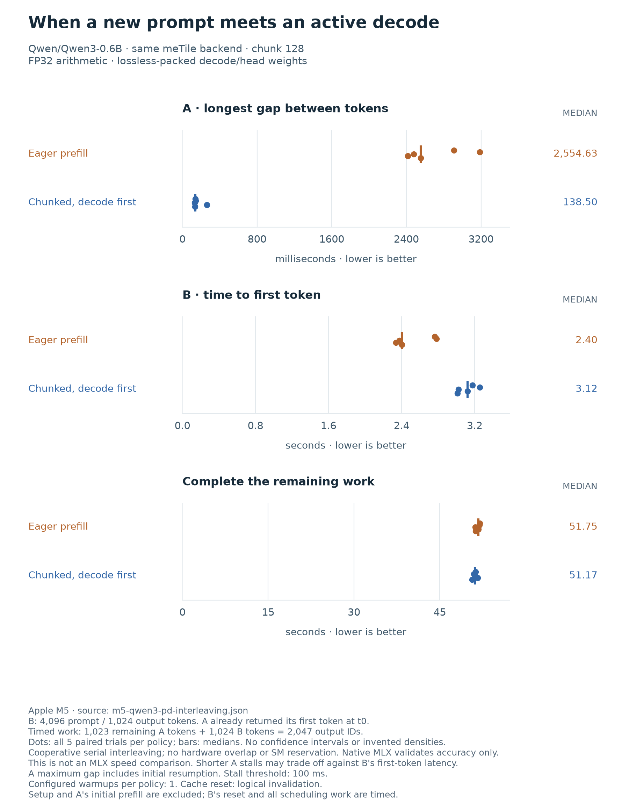

Prefill/decode scheduling¶
A long prompt should not stop an unrelated request from producing its next token. This prototype gives ready decodes a turn between bounded prefill chunks. It changes scheduling, not the model’s attention or numerical precision. The model arithmetic remains in DSL kernels.
What this can and cannot do¶
CUDA green contexts can assign work to provisioned SM subsets. The inspected public Metal APIs in the macOS 26.2 SDK do not expose an equivalent compute-core reservation or affinity control. Metal supports concurrent compute dispatch, but concurrency is not a core partition or a latency guarantee. Apple also describes interleaving independent compute work to improve GPU use.
The current implementation uses cooperative, serial interleaving on one GPU. A prefill chunk completes before the next decode runs; it does not preempt an executing kernel, reserve cores, overlap kernels, transfer KV between devices, or implement hardware prefill/decode disaggregation.
The requests must be independent. A request cannot generate its own first output before its prompt has been processed. This experiment therefore measures mixed-request responsiveness and throughput, not a faster isolated prefill algorithm or an MLX speedup. Shorter prefill quanta can reduce decode blocking while delaying the new request’s first token or increasing total workload time.
Fixed-arrival experiment¶
Both requests use Qwen3-0.6B and distinct, hashed technical-document prompts. Each has 4,096 input tokens and exactly 1,024 greedy output tokens. Request A has completed prefill and returned its first token before timing. At time zero, A is ready for its next decode and request B arrives.
Policy |
Scheduling rule |
|---|---|
Eager |
Finish B’s entire prefill, then alternate ready A/B decodes. |
Chunked |
Run one decode per ready request, then at most one B prefill chunk. |
FIFO, optional |
Finish A, then prefill and generate B. |
All policies use the same chunk size and final-layer pruning. The default chunk size is 128; there is no hidden tuning sweep. Timing includes B’s cache reset, scheduler and control work, GPU execution, greedy selection and host token observation. A’s prefill and first output are excluded, as are loading, packing, compilation and persistent allocation.
There are 2,047 timed outputs, not 2,048: A has 1,023 remaining outputs and B has 1,024. Aggregate throughput uses that count divided by the makespan. A’s recorded completion latency is its remaining service time, not its full request latency. B’s time to first token starts at its fixed time-zero arrival.
The report retains each token ID, emission timestamp and scheduling event. It reports inter-token p50/p95/p99, the maximum gap, A’s initial resumption gap, and intervals intersecting B’s prefill and service. A preset 100 ms threshold defines a descriptive stall count and excess duration, not a GPU stall counter. A single long pause can disappear from a p95 summary, so the maximum gap matters. Within-request intervals are not independent trials.
Before any timings, every policy checks both trajectories against the unmodified FP32 MLX model with TF32 disabled: complete K/V prefixes at chunk boundaries, every output’s full-vocabulary logits and exact token, every new K/V slot, and periodic full-cache checkpoints. The fixed combined relative and absolute tolerances remain 0.001. Every warmup and timed token sequence must match its validated reference. MLX is an accuracy reference here, not a timed policy.
Measured on Apple M5¶
Five paired trials used Qwen3-0.6B, two independent 4,096-token prompts, 1,024 outputs per request, 128-token chunks and logical cache reset. Each policy had one warmup; trial order alternated. Both policies used the same FP32 arithmetic and losslessly packed decode weights. Every accuracy gate passed, and all timed token sequences matched the native reference.
Metric |
Eager |
Chunked |
|---|---|---|
A’s maximum inter-token gap |
2,554.6 ms |
138.5 ms |
A’s initial resumption gap |
2,554.6 ms |
33.8 ms |
A’s p95 inter-token gap |
54.0 ms |
58.2 ms |
A’s p99 inter-token gap |
60.4 ms |
109.4 ms |
B’s time to first token |
2.404 s |
3.122 s |
Mixed-workload makespan |
51.752 s |
51.167 s |
Aggregate timed output rate |
39.55 tokens/s |
40.01 tokens/s |
Chunking replaces one multi-second interruption with repeated shorter gaps. The median paired reduction in A’s maximum gap is 19.09x, but this is not a throughput speedup or a latency guarantee. Across the five chunked runs, the maximum gap ranged from 130.8 to 262.2 ms. The largest occurred during alternating decode, well after B finished prefill; limiting prefill chunks does not bound every token gap. A’s p95 and p99 got worse, and the median count of gaps above 100 ms rose from 1 to 14. The median summed duration above that threshold fell from 2.455 to 0.248 seconds.
B waits longer for its first token because A keeps receiving decode turns. Total workload time stays close: the median paired makespan ratio is just 1.013x in favor of chunking. Five repetitions of this fixed workload do not establish a general throughput improvement, serving capacity or tail-latency bound. This is a responsiveness tradeoff, not an isolated prefill win.

Each dot is one trial; the line marks its policy’s median. The comparison changes only scheduling, not the backend. It does not measure GPU overlap.¶
The raw report includes all token
timestamps, validation checks, scheduling events and source hashes. Rebuild
the figure with python -m benchmarks.plots.render_pd_interleaving.
Reproduce¶
MLX_ENABLE_TF32=0 python -m benchmarks.megakernels.qwen3_pd_interleaving \
--prompt-tokens 4096 --output-tokens 1024 --chunk-size 128 \
--policies eager chunked --trials 5 --warmups 1 --logical-cache-reset \
--output /tmp/qwen3-pd-interleaving.json
The model must already be available in the local Hugging Face cache. Existing
report paths are never overwritten. Add fifo to --policies to include
the request-FIFO reference. --no-lossless-decode-weights disables packing
for every compared policy. Shorter runs are diagnostics, not evidence for the
4,096-input/1,024-output workload.